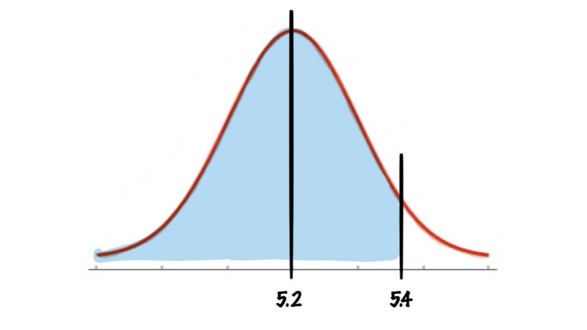

Normal Distributions
Examples
P(X < a )
An adult has on average 5.2 liters of blood. Assume the variable is normally distributed and has a standard deviation of 0.3. Find the percentage of people who have less than 5.4 liters of blood in their system.

So we are trying to find
\[P(x<5.4)\]
So first we need to convert to a z-score so we can use our table!
\[z=\frac{X-\mu}{\sigma}=\frac{5.4-5.2}{0.3}=0.67\]
Now we know that
\[P(X<5.4)=P(z<0.67)\]
and we can just look up \(P(z<0.67)=0.7486\) in our table (as we have done before)
Thus \(P(X<5.4)=0.7486\) or about 75%.